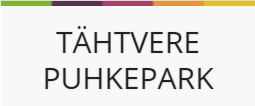

Päevapakkumised.ee

Väga kasulikuks kohaks tudengitele on lehekülg nimega päevapakkumised.ee. Lehekülg väljastab igapäevaselt erinevate söögikohtade päevapakkumisi koos hinnaga. Kõht on võimalik täis saada alates 1.50 € eest.
➜ Koduleht
Päevapraad.ee

Lehekülje eesmärgiks on kuvada kõikide kohalike kohvikute või restoranide päevapakkumised ühte patta, mis muudab hinnavõrdluse inimsele lihtsaks ning mugavaks.
➜ Koduleht
Fudler
Kindlasti ei tohiks ka tähelepanuta jääda ettevõte nimega Fudler. Oma kodulehel iseloomustavad nad end nii: “Fudler on platvorm, kus toidukohad saavad müümata jäänud toidule odavama hinna eest ostja leida.”
➜ Koduleht
Hesburger

Hesburgeris on võimalik liituda boonusklubiga ja saada hulgaldaselt soodustusi.
➜ Liitu kohe!
McDonald's

Samuti saab ka McDonald'sis sooduspakkumisi, kui alla tõmmata äpp.
➜ Tõmba äpp
Tartu Ülikooli Akadeemiline Spodiklubi
Tartu Ülikooli üliõpilasele pakutakse fitnessiklubi teenuse kasutamist esmaspäevast reedeni kuni kell 13.00. Ühekordne tasu - 15 €. Selle võimaluse rakendamiseks kirjuta ivika.varton@ut.ee.
➜ Koduleht
Tartu Sport

Sihtasutus Tartu Sport pakub omalt poolt üsna mõistlikku lahendust Jõusaalihuvilisele: Neil asub Tartus kaks väga sümpaatset jõusaalivõimalusega spordihoonet (A.le coq Sportihoone, Turu spordihoone) ning hinnad on tudengitele äärmiselt atraktiivsed. Huvi korral leiad täpsemat infot kodulehelt.
➜ Koduleht
Tähtvere Spordipark

Kui soovite liikuda värskes õhus, siis on seda võimalus teha Tähtvere Spordipargis. Seal on 850m asfalteeritud rullirada, 850m hakkepuidust jooksurada ja 1,3km sprindirada. Talvel kaetakse nii rullirada kui ka sprindirada kunstlumega ja aetakse rajatraktoriga sisse nii klassika kui ka vabatehnika suusarajad. Tähtvere Spordipark kuulub samuti Sihtasutuse Tartu Sport alla.
➜ Raja info
➜ Koduleht